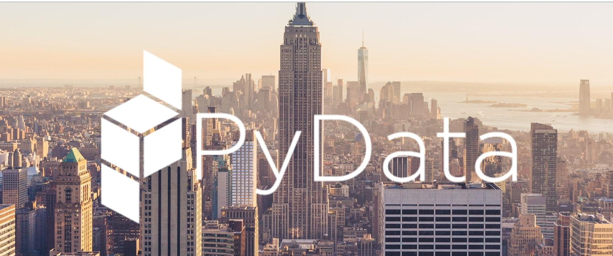
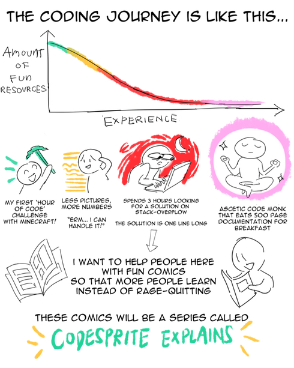
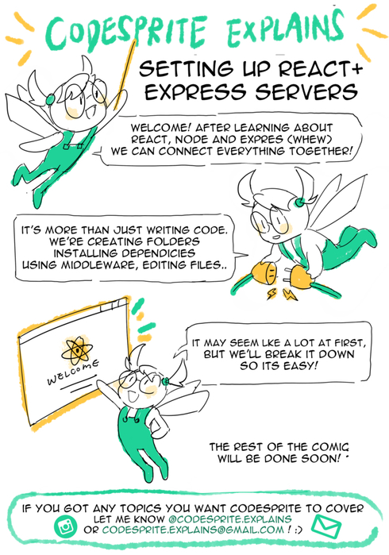
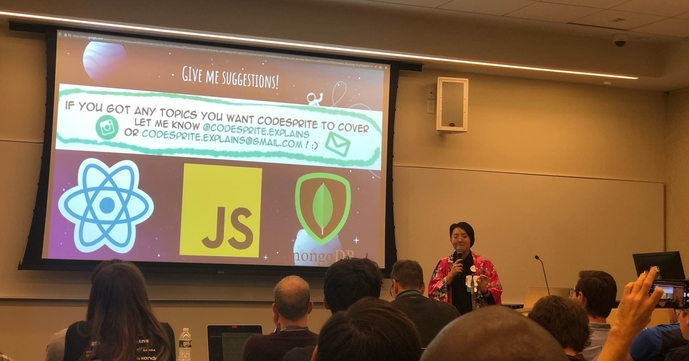

My Unexpected Dive into Open-Source Python
 Header illustration by author, Mars Lee
Header illustration by author, Mars Lee
I'm very happy to announce that I have joined Quansight as a front-end developer and designer! It was a happy coincidence how I joined- the intersection of my skills and the open source community's expanded vision.
I met Ralf Gommers, the director of Quansight Labs, at the PyData Conference in New York City last year after giving a Lightning Talk. However, as cool and confident as this may sound, I sure didn't start off that way.
At that point, it's been a few months since I graduated from a coding bootcamp. I was feeling down in the job-search funk. I hadn't even done much in Python, since my focus was in Javascript.

When I first heard about PyData and its Diversity Scholar program, I didn't think either applied to me. I didn't feel like I knew enough Python nor deserve a place to learn more about it. I'm always eager to learn something new, but PyData felt too out of my reach.
Thankfully, my friend who was a volunteer at PyData really encouraged me to apply. I gave it a shot. I was rejected at first - I didn't quite make the cut. I was disappointed and accepted it.
But a second round of funding came in from partner organizations. Now, they could bring in more Diversity Scholars. I was elated to have the chance! Their trust in me gave me the confidence to go. It totally changed my point of view from self-doubt to eagerness.
Once I was at PyData, I signed up for the Lightning Talks, knowing that it would be a great way for me to talk about my personal project, the 'Codesprite Explains' comics.
The 'Codesprite' comics break down code concepts into fun and visual ways. It was inspired by my desire to turn my boring written notes into something more personal.

First two pages of my personal project, 'Codesprite Explains'
At my Lightning Talk, I was confident. No longer did I doubt that I could be here- to take up space and stand up tall. I introduced myself as a Diversity Scholar. I was unabashedly unashamed to be new to Python and eager to learn. I delighted in showing off my artistic skills that give me so much joy and that aren’t common in this community. I laughed with the crowd at my cheesy puns.
When I finished my talk, I realized I came a long way from where I started. So when Ralf congratulated me, I was already feeling good. When he asked if I was interested in joining Quansight, that was the most unexpected-yet-awesomest cherry on top!

The author giving a Lightning Talk at PyData NYC
In my next blog post, I'll talk about my first impressions of Quansight and what made me say 'yes'.
Before ending this post, I would like to recap a few things.
There were some initial barriers that prevented me from joining the open-source space. Without knowing people involved in the community, such as my friend volunteering there, I wouldn't have known about PyData. Without the financial assistance of the Diversity Scholar program, I wouldn't have been able to afford a ticket as an unemployed graduate. A lack of technical knowledge itself isn't prohibitive, but when combined with the above factors, stops many other capable people from entering this space.
I was able to overcome these barriers with a combination of external and internal factors. The Diversity Scholars program putting trust into newcomers like me, my growing confidence and a welcoming community.
I look forward to contributing to the open-source community!
Special Thanks to:
- PyData's Diversity Scholars program and its NYC volunteer organizers Hanhan and Vinay.
- My new friends that welcomed me at PyData NYC - W4rner, Bhargav, Agata and Lev at their Natural Language Role-Playing workshop, hosted by agileEducation.
- NumFOCUS for organizing PyData and its funding partner organizations.
- Nicole from NumFOCUS for sitting next to me during my first Pandas lesson and accepting my feedback on further improving the Diversity Scholars program.
- My friend, Rinchen, for encouraging me to apply and volunteering at PyData NYC.